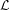

Two approaches have been used for in-situ U-Th-He dating. In the first, which we shall call the ‘first principles method’, the molar concentrations of U, Th, (Sm) and He measured and simply plugged into the He ingrowth equation to calculate the age t:
|
| (1) |
where U, Th and Sm are expressed in moles/μm3 or similar units, He is
the molar abundance of helium released from the ablation pit (in moles)
and V is the ablation pit volume (in μm3) [Boyce et al., 2006]. Equation 1
requires normalisation of the U, Th and Sm concentrations to a concentration
standard such as NIST SRM610 or 612 glass, and the calculation of He
concentrations by dividing the molar helium abundance by the ablation pit
volume. Though simple in principle, these measurements are often difficult
in practice. While the precision of U, Th, Sm concentration and ablation
volume measurements may be very precise, their accuracy often leaves much
to be desired. The reason for this are the different ablation characteristics
of glass and zircon, and the redeposition of ejecta in ablation pits under
ultra-high vacuum conditions. As a result, the first principles method often yields
ages that are offset from the true values by an unquantifiable systematic
error. An example of this problem is given in the results section of this paper
(?)
To circumvent these problems, Vermeesch et al. [2012], proposed an alternative ‘pairwise dating’ approach, in which all the mass spectrometer and pit volume (or depth) measurements are normalised to a standard of known U-Th-He age. Thus, all the aforementioned systematic errors should cancel out, producing more accurate ages. By using an age standard that is concordant in its 208Pb/232Th- and 206Pb/238U-ages, the pairwise dating method removes the need to use any concentration standards. In the present study, we introduce a slightly modified version of the pairwise dating method, which differs from the original implementation in the following ways:
As explained at the beginning of this section, both the U, Th and Sm concentrations and the ablation pit volume measurements often tend to be inaccurate. All the corresponding systematic errors can be grouped into a single calibration factor which we shall call κ:
|
| (2) |
κ is unknown but can be estimated by analysing a standard of known U-Th-He age ts ±σ(ts). Suppose that we have n standard measurements, and assume that the corresponding age estimates si follow a Normal distribution with two sources of variance:
|
| (3) |
with 1 ≤ i ≤ n and
|
| (4) |
Then κ can be found by maximising the log-likelihood function:
|
| (5) |
This function can be solved in a just a few iterations with Newton’s method, which involves taking the first and second derivatives of  with respect to κ. This is convenient because the latter can then be used to estimate the approximate standard error of κ:
|
| (6) |
using standard maximum likelihood theory. The resulting κ-value can then simply be plugged into Equation 2 and solved for xi. The age uncertainty is given by:
|
| (7) |
which accounts for all sources of uncertainty, including those on κ and
ts.
Although the above calculations are relatively straightforward to carry
out, the details of taking the partial derivatives are rather tedious. We have
implemented the method in a user-friendly browser-based calculator to facilitate the
application of the κ-calibration method. The spreadsheet-like app is entirely
written in HTML and JavaScript and can therefore be downloaded and
run offline as well as online. The calculator is available free of charge at
http://resochronometer.london-geochron.com.
J. W. Boyce, K. V. Hodges, W. J. Olszewski, M. J. Jercinovic, B. D. Carpenter, and P. W. Reiners. Laser microprobe (U-Th)/He geochronology. Geochimica et Cosmochimica Acta, 70:3031–3039, 2006. doi: 10.1016/j.gca.2006.03.019.
P. Vermeesch, S. C. Sherlock, N. M. W. Roberts, and A. Carter. A simple method for in-situ U-Th-He dating. Geochimica et Cosmochimica Acta, 79: 140–147, 2012. doi: 10.1016/j.gca.2011.11.042.